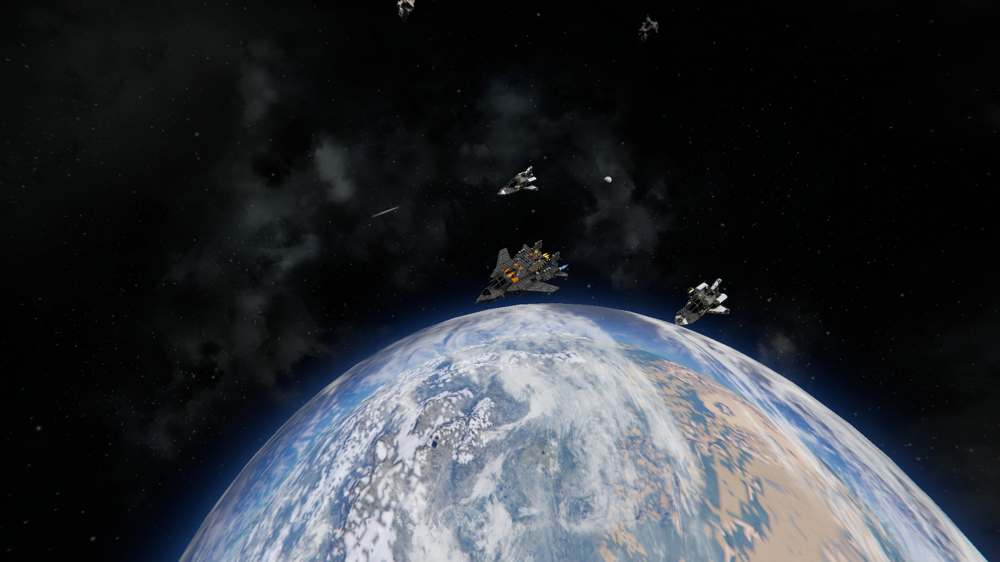
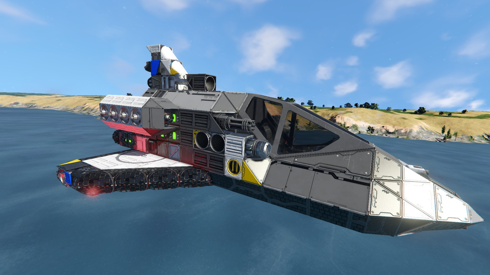

Space Engineers is a sandbox game where players can build ships, stations, and vehicles in space. It combines creativity, engineering, and exploration, which is why it is one of my favorite games.

Players can create many kinds of ships depending on what they need them for. Some ships are made for combat, while others are designed for travel, hauling cargo, or exploration.

When building a ship, players need to think about power, balance, weight, and movement. A good design is not only about looks, but also about function and survival.
